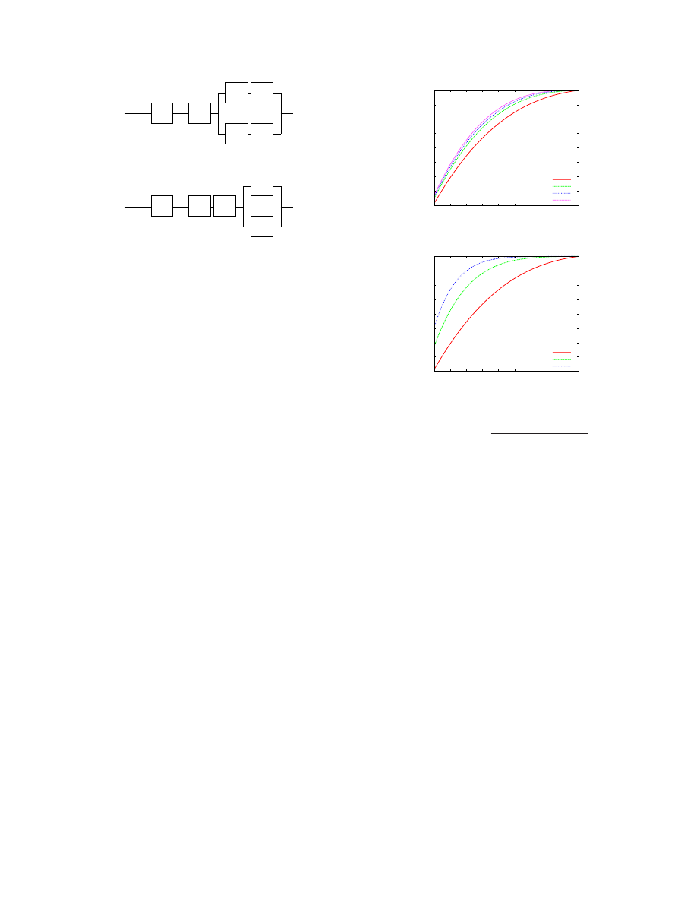

Architecting Dependable Systems Using Virtualization
HariGovind V. Ramasamy and Matthias Schunter
IBM Zurich Research Laboratory
R¨uschlikon, Switzerland
{
hvr,mts
}
@zurich.ibm.com
Abstract
We propose new methods of leveraging virtualization
for addressing system dependability issues. Using com-
binatorial modeling, we analyze multiple design choices
when a single physical server is used to host multiple
virtual servers. Our results show that unless certain
conditions (e.g., regarding the reliability of the hyper-
visor and the number of VMs) are met, virtualization
could decrease the reliability of a single physical node.
In light of the prevailing ad-hoc approach to virtualiza-
tion and the general inclination to move services out of
the operating system into the virtualization layer, our re-
sults point out the need for a more cautious and rigorous
approach.
1 Introduction
Virtualization allows abstracting away the real hard-
ware configuration of a system. One method of virtualiz-
ing the hardware resources of a computer involves using
a layer of software, called the Virtual Machine Moni-
tor (VMM), to provide the illusion of real hardware for
multiple virtual machines (VMs). Inside each VM, the
operating system (often called the
guest
OS) and appli-
cations run on the VM’s own virtual resources such as
virtual CPU, virtual network card, virtual RAM, and vir-
tual disks. A VMM can be hosted directly on the com-
puter hardware (e.g., Xen [4]) or within a host operating
system (e.g., VMware).
Introduced in the 1960s, virtualization has lately en-
joyed a great surge of interest. The improved efficiency,
flexibility, and cost savings that virtualization of stor-
age, networking, and computing resources enables in
data centers have been the key drivers of this interest.
We address the issue of using virtualization as a
building block for enhancing dependability not just in
data centers, but also in more general settings. With
few exceptions, current solutions in this space have been
largely ad-hoc. There seems to be an increasingly preva-
lent tendency to think of virtualization as a cure-all.
Suggestions to shift almost anything that runs on a real
machine to a virtual machine and to move services (such
as networking and security) currently provided by the
operating system to the virtual machine monitor are be-
coming commonplace (e.g., [9]).
We make the following contributions.
First, we
present new ways of using virtualization for addressing
system dependability issues. Second, we use combina-
torial modeling to analyze multiple design choices when
a single physical server is used to host multiple virtual
servers and to quantify the reliability impact of virtual-
ization. In light of the prevailing general inclination to
shift services out of the guest OS into the virtualization
layer, we show that this shift, if not done carefully, could
adversely affect system reliability.
2 Related Work
Bressoud and Schneider [5] implemented a primary-
backup replication protocol tolerant to benign faults at
the VMM level. The protocol resolves non-determinism
by logging the results of all non-deterministic actions
taken by the primary and then applying the same results
at the backups to maintain state consistency.
Double-Take [2] uses hardware-based real-time syn-
chronous replication to replicate application data from
multiple VMs to a single physical machine so that the
application can automatically fail over to a spare ma-
chine, by importing the replicated data, in case of out-
age. Since the replication is done at the file system level
below the VM, the technique is guest-OS-agnostic.
Douceur and Howell [7] describe how VMMs can be
used to ensure that VMs satisfy determinism and thereby
enable state machine replication at the VM level instead
of the application level. Specifically, they describe how
a VM’s virtual disk and clock can be made deterministic
with respect to the VM’s execution. The design relieves
the burden off the application programmer to structure
the application as a deterministic state machine.
Dunlap et al. describe ReVirt [8] for VM logging and
replay. ReVirt encapsulates the OS as a VM, logs non-
deterministic events that affect the VM’s execution, and
uses the logged data to replay the VM’s execution later.
Joshi et al. [11] combine VM introspection with VM
replay to analyze whether an OS vulnerability or ap-
plication vulnerability was activated in a VM before
a patch was applied. The analysis is done based on
vulnerability-specific predicates, which are provided by
the patch writer. After the patch has been applied, the
same predicates can be used during the VM’s normal
execution to detect and respond to attacks.
Backtracker [12] can be used to identify which ap-
plication running inside a VM was exploited on a given
1

host. An extension of Backtracker [13] has been used to
track attacks from a single host at which infection has
been detected to the originator of the attack and to other
hosts that were compromised from that host.
3 Virtualization: New Opportunities for
Dependability
Commodity operating systems provide a level of de-
pendability that is much lower than what is desired. This
trend hasn’t seen much change in the last decade or so.
Hence, the focus has shifted to designing dependable
systems around the OS problems.
Virtualization enables such a design in at least two
ways. One way is to encapsulate the OS and applications
in a VM and introduce dependability enhancements at
the VMM-level, which are transparent to the guest OS
and applications. Such a design allows the VM to be
treated as a black box. For example, checkpointing and
recovery can be done at the granularity of VMs instead
of processes. Another way is to instrument applications,
middleware, and/or the guest OS with explicit knowl-
edge of their running on a virtual as opposed to physical
machine. For example, in programming languages sup-
porting VMs (such as Java and OCAML), checkpoint-
ing the application state at the VM-level or byte-code-
level (as opposed to native code) can allow restarting
the saved state on a hardware platform different from
the one in which checkpointing was done [3].
Virtual machines offer a degree of flexibility that is
not possible to obtain on physical machines. That is
mainly because VM state, much like files, can be read,
copied, modified, saved, migrated, and restored. In this
section, we propose various new methods based on vir-
tualization for improving dependability.
Coping with Load-Induced Failures:
Deploying
services on VMs instead of physical machines enables
higher and more flexible resilience to load-induced fail-
ures without requiring additional hardware. Under load
conditions, the VMs can be seamlessly migrated (using
live migration technology [6]) to a lightly loaded or a
more powerful physical machine. VM creation is simple
and cheap, much like copying a file. In response to high
load conditions, it is much easier to dynamically pro-
vision additional VMs on under-utilized physical ma-
chines than to provision additional physical machines.
Patch Application for High Availability Services:
Typically, patch application involves system restart, and
thus negatively affects service availability. Consider a
service running inside a VM. Virtualization provides
a way to remove faults and vulnerabilities at run-time
without affecting system availability. For this purpose, a
copy of the VM is instantiated, and the patch (be it OS-
level or service-level) is applied on the copy rather than
on the original VM. Then, the copy is restarted for the
patch to take effect after which the original VM is grace-
fully shut down and future service requests are directed
to the copy VM. The patch is applied at the copy VM
and the copy VM is restarted while the original VM still
continues regular operation, thereby maintaining service
availability. To ensure that there are no undesirable side
effects due to the patch application, the copy VM may
be placed in
quarantine
for a sufficiently long time while
observing its post-patch behavior before shutting down
the original VM. If the service running inside the VM
is stateful, then additional techniques based on a combi-
nation of VM checkpointing and VM live migration [6]
may be used to retain network connections of the orig-
inal VM and to bring the copy up-to-date with the last
correct checkpoint.
Enforcing Fail-Safe Behavior:
The average time be-
tween when a vulnerability is made public and when a
patch is available is still measured in months. In 2005,
Microsoft took an average time of 134.5 days for issuing
critical patches for Windows security problems reported
to the company [1]. Developing patches for a software
component is a time-consuming process because of the
need to ensure that the patch does not introduce new
flaws or affect the dependencies between that compo-
nent and other components in the system. In many cases,
a service administrator simply does not have the luxury
of suspending a service immediately after a critical flaw
(in the OS running the service or the service itself) be-
comes publicized until the patch becomes available.
Virtualization can be used to prolong the availability
of the service as much as possible while at the same time
ensuring that the service is fail-safe. We leverage the ob-
servation that publicizing a flaw is usually accompanied
by details of possible attacks exploiting the flaw and/or
symptoms of an exploited flaw. Developing an external
monitor for identifying attack signatures or symptoms
of an exploited flaw may be done independently of the
patch development. The monitor may also be developed
much faster than the patch itself, because the monitor
may not be subject to the same stringent testing and val-
idation requirements.
Consider a service run inside a VM instead of directly
on a physical machine. Then, a VM-external monitor,
running parallel to the VM, can be used detect the symp-
toms of the exploited flaw and to signal the VMM to
crash the VM. Alternatively, if the attack signature is
known, the monitor can be used to identify an ongoing
attack and terminate interaction with the attack source.
The monitor could be implemented at the VMM level
or in a privileged VM (such as Dom0 in Xen [4]). If it
is important to revert the service to its last correct state
when a patch does become available, then the above
technique can be augmented with a checkpointing mech-
anism, which periodically checkpoints the state of the
2
service with respect to the VM (e.g., [3]).
Proactive Software Rejuvenation:
Rebooting a ma-
chine is an easy way of rejuvenating software. The
downside of machine reboot is that the service is un-
available during the reboot process. The VMM is a con-
venient layer for introducing hooks to proactively reju-
venate the guest OS and services running inside a VM
in a performance- and availability-preserving way. Pe-
riodically, the VMM can be made to instantiate a
rein-
carnation VM
from a clean VM image. The booting of
the reincarnation VM is done while the original VM still
continues regular operation, thereby maintaining service
availability. As mentioned above in the context of patch
application, techniques based on VM checkpointing and
live migration may be used to seamlessly transfer net-
work connections and service state of the original VM
to the reincarnation VM. It is possible to adjust the per-
formance impact of the rejuvenation procedure on the
original VMs performance. To lower the impact, the
VMM can restrict the amount of resources devoted to
the booting of reincarnation VM and compensate for the
restriction in resources by allowing more time for the
rebooting to complete.
One can view the above type of rejuvenation as
a
memory scrubbing
technique, for reclaiming leaked
memory and recovering from memory errors of the orig-
inal VM. Perhaps, more importantly, such periodic reju-
venation offers a way to proactively recover from errors
without requiring failure detection mechanisms (which
are often unreliable) to trigger the recovery.
Replica Diversity:
In fault-tolerant replication, di-
versity of replicas is important to ensure that all replicas
do not fail because of the same disruptive event. By de-
ploying replicas on a combination of virtual and phys-
ical machines rather than on physical machines alone,
replica diversity can be enhanced. Also, deploying repli-
cas on virtual machines instead of physical machines
opens another layer in which diversity can be intro-
duced: the VMM software. VMM diversity and OS di-
versity can complement each other to enhance replica
diversity without additional hardware costs. On the flip
side, using the same VMM for all replica VMs will actu-
ally lower replica diversity even if the replicas were de-
ployed on different operating systems. That is because,
a fault in the VMM could lead to failure of all replicas.
Containment:
Fault containment is an important as-
pect of dependability. Containment among VMs run-
ning on the same VMM is much stronger than contain-
ment among processes running on the same OS. To bet-
ter isolate the fault effects of two services running on the
same OS and physical server, one can carve the physical
server into two VMs each running one service. On the
other hand, fault containment between two VMs is not
as strong as the fault containment between two physical
Hardware H
OS + Application
M
(a) Architecture
H
M
(b) Combinatorial Model
Figure 1. Non-Virtualized Node
machines (e.g., due to covert channels). Hence, when
cost is not a restriction (e.g., in highly-critical space and
military applications), running software components on
distinct hardware would be better for fault containment
than running the components in different VMs on the
same hardware.
4 Quantifying the Impact of Virtualization
on Node Reliability
In this section, we use combinatorial modeling to per-
form reliability analysis of redundant fault-tolerant de-
signs involving virtualization on a single physical node
and compare them with the non-virtualized case. We
consider a model in which multiple VMs run concur-
rently on the same node and offer identical service. We
derive lower bounds on the VMM reliability and the
number of VMs required for the virtualized node to have
better reliability than the non-virtualized case. We also
analyze the reliability impact of moving a functionality
common to all VMs out of the VMs and into the VMM.
Additionally, we analyze the reliability of a redundant
execution scheme that can tolerate the corruption of one
out of three VMs running on the same physical host,
and compare it with the non-virtualized case. Our re-
sults point to the need for careful modeling and analysis
before a design based on virtualization is used.
Combinatorial modeling and Markov modeling are
the two main methods used for reliability assessment
of fault-tolerant designs [10]. We chose combinatorial
modeling because its simplicity enables easy elimina-
tion of “hopeless” choices in the early stage of the de-
sign process. In combinatorial modeling, a system con-
sists of series and parallel combinations of modules. The
assumption is that module failures are independent. In
a real-world setting where module failures may not be
independent, the reliability values obtained using com-
binatorial modeling yield upper bounds.
Non-Virtualized (NV) Node:
For our reliability as-
sessment, we consider a non-virtualized single physical
node as the base case. We model the node using two
modules: hardware (
H
) and the software machine (
M
)
consisting of the operating system, middleware, and ap-
plications (Figure 1(a)) . Thus, the node is a simple se-
rial system consisting of
H
and
M
whose reliability is
given by
R
N V
sys
=
R
H
R
M
, where
R
X
denotes the relia-
bility of module
X
(Figure 1(b)).
3
. . .
Hardware H
Virtual
Machine
M
n
Virtual
Machine
M
1
Virtual Machine
Monitor V
(a) Architecture
n
M
M
.
.
.
H
V
1
(b) Combinatorial Model
Figure 2. Node with
n
VMs
Virtualized Node with
n
Independent, Identical
VMs:
Figure 2(a) shows a physical node consisting of
H
, a type-1 VMM (
V
) that runs directly on the hardware
(such a VMM is referred to as a
hypervisor
), and one or
more virtual machines (
{
M
i
}
, i
≥
1
). Each VM has the
same functionality as the software machine
M
shown
in the non-virtualized case. The VMs provide identi-
cal service concurrently and independently (i.e., with-
out the need for strong synchronization). For example,
each VM could be a virtual server answering client re-
quests for static web content. Thus, the node is a series-
parallel system (Figure 2(b)) whose overall reliability is
given by
R
n
sys
=
R
H
R
V
[1
−
Q
n
i
=0
(1
−
R
M
i
)]
. Then,
R
n
sys
> R
N V
sys
gives the condition for
n
-replicated ser-
vice to be more reliable than the non-virtualized service.
i.e.,
R
H
R
V
[1
−
Q
n
i
=0
(1
−
R
M
i
)]
> R
H
R
M
For simplicity, let
R
M
i
=
R
M
for all
1
≤
i
≤
n
. Then,
the above condition becomes
R
V
[1
−
(1
−
R
M
)
n
]
> R
M
(1)
Inequality (1) immediately yields two conclusions.
First, if
n
= 1
, then again the above condition does not
hold (since
R
V
<
1
). What this means is that it is neces-
sary to have some additional coordination mechanism or
protocol built into the system to compensate for the reli-
ability lost by the introduction of the hypervisor. In the
absence of such a mechanism/protocol, simply adding a
hypervisor layer to a node will only decrease the node
reliability. Second, if
R
V
=
R
M
, then it is obvious that
above condition does not hold.
It is clear that the
hypervisor has to be more reliable
than the individual VM
. The interesting question is, how
much more reliable. Figure 3 shows that for a fixed
R
M
value, the hypervisor has to be more reliable when de-
ploying fewer VMs. The graph also shows that, for fixed
values of
R
M
and
R
V
, there exits a lower bound on the
n
value below which the virtualized node reliability will
definitely be lower than that of a non-virtualized node.
For example, when
R
M
= 0.1 and
R
V
= 0.3, deploying
fewer than 4 VMs would only lower the node reliability.
This is a useful result, since in many practical settings,
R
M
and
R
V
values may be fixed, e.g., when the hyper-
visor, guest OS, and application are commercial-off-the-
shelf (COTS) components with no source code access.
The equation for
R
n
sys
also suggests that by increas-
0.1
0.2
0.3
0.4
0.5
0.6
0.7
0.8
0.9
1
0.1 0.2 0.3 0.4 0.5 0.6 0.7 0.8 0.9
1
Lower Bound on Reliability
of Hypervisor (R
V
)
Reliability of Virtual Machine (R
M
)
n=2
n=3
n=4
n=8
n=16
n=32
Figure 3. Lower Bound on the Hypervisor Reliability
for a Physical Node with
n
Independent and Concur-
rently Operating VMs Providing Identical Service.
0
10
20
30
40
50
60
70
0.1
0.2
0.3
0.4
0.5
0.6
0.7
0.8
0.9
1
Lower Bound on Number of VMs (n)
Reliability of Virtual Machine (R
M
)
R = 0.98
R = 0.998
Figure 4. Lower Bound on the Number of VMs to
Achieve Desired Reliability
R
for a Physical Node
with
n
Independent and Concurrently Operating VMs
Providing Identical Service when
R
V
= 0
.
999
.
ing the number of VMs, the node reliability can be made
as close to the hypervisor reliability as desired. Suppose
we desire the node reliability to be
R
, where
R < R
V
.
Then,
R
=
R
H
R
V
[1
−
(1
−
R
M
)
n
]
. Assume that the
hardware is highly reliable, i.e.,
R
H
≃
1
. Then, the
above equation becomes the inequality,
R < R
V
[1
−
(1
−
R
M
)
n
]
=
⇒
(1
−
R
M
)
n
<
1
−
R
R
V
=
⇒
n.log
(1
−
R
M
)
< log
(1
−
R
R
V
)
Dividing by
log
(1
−
R
M
)
, a negative number, we get,
n >
log
(1
−
R
R
V
)
log
(1
−
R
M
)
(2)
Inequality (2) gives a lower bound on the number of
VMs required for a virtualized physical node to meet a
given reliability requirement. In practice, the number of
VMs that can be hosted on a physical node is ultimately
limited by the resources available on that node. Compar-
ing the lower bound with the number of VMs that can
be possibly co-hosted provides an easy way to eliminate
certain choices early on in the design process.
Figure 4 shows the lower bound for
n
for two dif-
ferent
R
values (0.98 and 0.998) as the VM reliability
(
R
M
) is increased from roughly 0.1 to 1.0 with the hy-
4

’
M
1
.
.
.
H
V
f
f
M
n
’
(a) Configuration
C
1
: Functionality
f
imple-
mented within each VM
’
M
1
.
.
.
H
V
M
n
F
’
(b) Configuration
C
2
: Functionality
F
imple-
mented as part of Hypervisor
Figure 5. Moving Functionality out of the VMs into the
Hypervisor
pervisor reliability fixed at
0
.
999
. The figure shows that
for fixed
R
V
and
R
M
values, higher system reliability
(up to
R
V
) can be obtained by increasing the number
of VMs hosted. However, when
n
is large, one is faced
with the practical difficulty of obtaining sufficient diver-
sity to ensure that VM failures are independent.
Moving Functionality out of the VMs into the Hy-
pervisor:
We now analyze the reliability impact of mov-
ing a functionality out of the VMs into the hypervisor.
As before, our system model is one in which a physical
node has
n
≥
1
independent and concurrently operating
VMs providing identical service. Consider a functional-
ity
f
implemented inside each VM. Then, each VM
M
i
can be divided into two components,
f
and
M
0
i
, the latter
representing the rest of
M
i
. Figure 5(a) shows the relia-
bility model for a node containing
n
such VMs. Let us
call this node configuration
C
1
. Further, suppose that the
functionality
f
is moved out of the VMs and substituted
by component
F
implemented as part of the hypervisor.
Now, the new hypervisor consists of two components
F
and the old hypervisor
V
. Figure 5(b) shows the reliabil-
ity model for a node with the modified hypervisor. Let
us call this node configuration
C
2
.
We now derive the condition for
C
2
to be at least as
reliable as
C
1
. For simplicity, let us assume that
R
M
0
i
=
R
M
0
for all
1
≤
i
≤
n
. Then, the desired condition is
R
C
2
sys
≥
R
C
1
sys
=
⇒
R
H
R
V
R
F
[1
−
(1
−
R
M
0
)
n
]
≥
R
H
R
V
[1
−
(1
−
R
f
R
M
0
)
n
]
R
F
≥
[1
−
(1
−
R
f
R
M
0
)
n
]
[1
−
(1
−
R
M
0
)
n
]
(3)
It is easy to see from Figure 5 that when there is only
a single VM, it does not matter whether the functionality
is implemented in the hypervisor or in the VM. We can
also confirm this observation by substituting
n
= 1
in
Inequality (3).
0.2
0.3
0.4
0.5
0.6
0.7
0.8
0.9
1
0.1 0.2 0.3 0.4 0.5 0.6 0.7 0.8 0.9
1
Lower Bound on Reliability
of Functionality when
Moved to Hypervisor (R
F
)
Reliability of Functionality Implemented in VM (R
f
)
R
M’
= 0.75, n = 3
R
M’
= 0.90, n = 3
R
M’
= 0.95, n = 3
R
M’
= 0.99, n = 3
(a) Fixed
n
, Varying
R
M
0
0.2
0.3
0.4
0.5
0.6
0.7
0.8
0.9
1
0.1 0.2 0.3 0.4 0.5 0.6 0.7 0.8 0.9
1
Lower Bound on Reliability
of Functionality when
Moved to Hypervisor (R
F
)
Reliability of Functionality Implemented in VM (R
f
)
R
M’
= 0.75, n = 3
R
M’
= 0.75, n = 6
R
M’
= 0.75, n = 9
(b) Fixed
R
M
0
, Varying
n
Figure 6. Plot of
R
F
≥
[1
−
(1
−
R
f
R
M
0
)
n
]
[1
−
(1
−
R
M
0
)
n
]
Figures 6(a) and (b) illustrate how
R
F
varies as
R
f
is increased from 0.1 to 1. The graphs show that
F
has
to be more reliable than
f
for the configuration
C
2
to be
more reliable than
C
1
. Figure 6(a) shows that as
R
M
0
increases, the degree by which
F
should be more reli-
able than
f
also increases. Figure 6(b) shows that the
degree is also considerably higher when more VMs are
co-hosted on the same physical host. For example, even
with modest
R
M
0
and
R
f
values of 0.75,
F
has to be
ultra-reliable:
R
F
has to be more than .9932 and .9994
when
n
= 6
and
n
= 9
respectively. Thus, when more
than a handful of VMs are co-hosted on the same physi-
cal node, better system reliability is likely to be obtained
by retaining a poorly reliable functionality in the VM
than by moving the functionality into the hypervisor.
Virtualized Node with VMM-level Voting:
Con-
sider a fault-tolerant 2-out-of-3 replication scheme in
which three VMs providing identical service are co-
hosted on a single physical node. The VMM layer re-
ceives client requests and forward them to all three VMs
in the same order. Assume that the service is a deter-
ministic state machine; thus, the VM replicas yield the
same result for the same request. The VMM receives
the results from the VM replicas. Once the VMM has
obtained replies from two replicas with identical result
values for a given client request, it forwards the result
value to the corresponding client. Such a scheme can
5
0.88
0.9
0.92
0.94
0.96
0.98
1
0.1 0.2 0.3 0.4 0.5 0.6 0.7 0.8 0.9
1
Lower Bound on Reliability
of Hypervisor (R
V
)
Reliability of Virtual Machine (R
M
)
Figure 7. Plot of
(3
R
M
−
2
R
2
M
)
−
1
< R
V
<
1
tolerate the arbitrary failure of one VM replica, and is
similar to the one suggested in the RESH architecture for
fault-tolerant replication using virtualization [14]. Then,
assuming that the VMs fail independently, the system re-
liability is given by
R
2
−
of
−
3
sys
=
R
H
R
V
[
R
3
M
+
µ
3
2
¶
R
2
M
(1
−
R
M
)]
Then,
R
2
−
of
−
3
sys
> R
N V
sys
gives the condition for the 2-
out-of-3 replication scheme to be more reliable than the
non-virtualized service. Thus, we obtain
R
H
R
V
[
R
3
M
+
µ
3
2
¶
R
2
M
(1
−
R
M
)]
> R
H
R
M
R
V
>
1
3
R
M
−
2
R
2
M
(4)
Inequality (4) gives a lower bound on the hypervisor
reliability for the 2-out-of-3 replication scheme to have
better reliability than the non-virtualized case. Figure 7
shows a plot of
1
3
R
M
−
2
R
2
M
< R
V
<
1
. It is clear from
the graph that there exists no
R
V
value that satisfies In-
equality (4) and is less than 1, when
R
M
≤
0
.
5
. In
other words, if the VM reliability (i.e., the OS and ser-
vice reliability) is poor to begin with, then the 2-out-of-
3 replication scheme will only make the node reliability
worse even if the hypervisor is ultra-reliable. The graph
also shows that the higher the hypervisor reliability, the
larger the range of VM reliability values for which the 2-
out-of-3 replication scheme has better reliability than the
non-virtualized case. For example, when
R
V
= 0
.
98
,
the range of VM reliability values that can be accommo-
dated is greater than the range when
R
V
= 0
.
9
.
5 Conclusion
We described new ways of leveraging virtualization
for improving system dependability. Using combinato-
rial modeling, we provided more detailed analysis than
was previously available on how virtualization can af-
fect system dependability. Our results show that unless
certain conditions (e.g., regarding the reliability of the
hypervisor and the number of VMs) are met, introducing
virtualization could decrease the reliability of a physical
node. In light of the general inclination to move ser-
vices out of the guest OS into the virtualization layer,
our results point out the need for a more cautious ap-
proach. Notwithstanding the simplicity of the modeling
technique and its associated strong assumptions (regard-
ing independent module failures), our exercise points to
the need for more thorough and rigorous modeling and
assessment in the context of virtualization.
References
[1]
A
Time
to
Patch.
http://blog.
washingtonpost.com/securityfix/2006/
01/a_time_to_patch.html
.
[2]
VMWare Double-Take.
http://www.vmware.
com/pdf/vmware_doubletake.pdf
.
[3]
A. Agbaria and R. Friedman. Virtual Machine Based
Heterogeneous Checkpointing.
Software: Practice and
Experience
, 32(1):1–19, 2002.
[4]
P. T. Barham, B. Dragovic, K. Fraser, S. Hand, T. L. Har-
ris, A. Ho, R. Neugebauer, I. Pratt, and A. Warfield. Xen
and the Art of Virtualization. In
Proc. 19th ACM Sym-
posium on Operating Systems Principles (SOSP-2003)
,
pages 164–177, October 2003.
[5]
T. C. Bressoud and F. B. Schneider. Hypervisor-Based
Fault Tolerance.
ACM Trans. Comput. Syst.
, 14(1), 1996.
[6]
C. Clark, K. Fraser, S. Hand, J. G. Hansen, E. Jul,
C. Limpach, I. Pratt, and A. Warfield. Live Migra-
tion of Virtual Machines. In
Proc. 2nd Symposium on
Networked Systems Design and Implementation (NSDI-
2005)
, May 2005.
[7]
J. R. Douceur and J. Howell. Replicated Virtual Ma-
chines. Technical Report MSR TR-2005-119, Microsoft
Research, Sep 2005.
[8]
G. W. Dunlap, S. T. King, S. Cinar, M. A. Basrai, and
P. M. Chen. ReVirt: Enabling Intrusion Analysis through
Virtual-Machine Logging and Replay.
SIGOPS Operat-
ing System Review
, 36(SI):211–224, 2002.
[9]
T. Garfinkel and M. Rosenblum.
When Virtual is
Harder than Real: Security Challenges in Virtual Ma-
chine Based Computing Environments. In
Proc. 10th
Workshop on Hot Topics in Operating Systems (HotOS-
X)
, May 2005.
[10]
B. W. Johnson.
Design and Analysis of Fault-Tolerant
Digital Systems
. Addison-Wesley, 1989.
[11]
A. Joshi, S. T. King, G. W. Dunlap, and P. M.
Chen. Detecting Past and Present Intrusions through
Vulnerability-Specific Predicates. In
Proc. 20th ACM
Symposium on Operating Systems Principles (SOSP-
2005)
, pages 91–104, 2005.
[12]
S. T. King and P. M. Chen. Backtracking Intrusions.
In
Proc. 19th ACM Symposium on Operating Systems
Principles (SOSP-2003)
, pages 223–236, 2003.
[13]
S. T. King, Z. M. Mao, D. G. Lucchetti, and P. M. Chen.
Enriching Intrusion Alerts Through Multi-Host Causal-
ity. In
Proc. Network and Distributed System Security
Symposium (NDSS-2005)
, 2005.
[14]
H. P. Reiser, F. J. Hauck, R. Kapitza, and W. Schr¨oder-
Preikschat. Hypervisor-Based Redundant Execution on
a Single Physical Host. In
Proc. 6th European Depend-
able Computing Conference (EDCC-2006)
, page S.2,
2006.
6